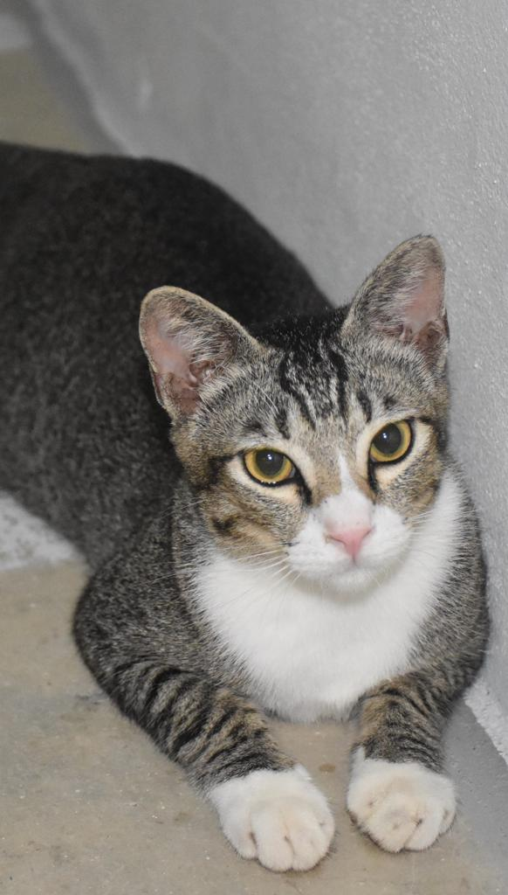

<!DOCTYPE html>
<html lang="en">
    <head>

        <title>MORE ABOUT ME</title>

<body background="images/bg.jpg"></body>

<!DOCTYPE html>
<html>
<head>
<meta name="viewport" content="width=device-width, initial-scale=1">
<style>
body {
  margin: 0;
  font-family: bookman old style;
}

.topnav {
  overflow: hidden;
  background-color: #080202;
}

.topnav a {
  float: left;
  color: white;
  text-align: center;
  padding: 14px 16px;
  text-decoration: none;
  font-size: 17px;
}

.topnav a:hover {
  background-color: #ddd;
  color: black;
}

.topnav a.active {
  background-color: #665c45;
  color: white;
}
</style>
</head>
<body>

<div class="topnav">
  <a href="Home.html">Home</a>
  <a href="Education.html">Education</a>
  <a class="active" href="More About Me.html">More About Me</a>
</div>


</body>
</html>
                 <!--More About Me section starts-->

                 <br></br>
                 <br></br>

    <section class="More About Me" id="More About Me"></section>
    <center>
    <h1 class="heading"> <span> More About </span> Me</h1>
</center>
<br></br>
    
    <center>
    <p><font face="Bookman old style" size="3"> <h2><b>He is 20 years old as of 2023, loves coffee as it helps him to get through his day and loves watching movie but only when he is in the mood for it</b></h2></p>
    
    
    
    <br>
    <br>
</center>

<center>

<p><font face="bookman old style" size="3" <h2><b>He loves cat! Despite not knowing how to take care of cat that well, he still loves adopting cat</b></h2></font></p>
<br>


</center>

<center>
    
    <p><font face="bookman old style" size="3" <h2><b>He also finds the joy in nature & hiking! He loves exploring new places to hike</b></h2></font></p>
    <br>
    
    
    
</center>

<center>
    
    <p><font face="bookman old style" size="3"> <h2><b>He's a sunset enthusiast too!</b></h2></font></p>
    <br>
    
    
</center>

</section>

    <!--more of her section ends-->

</head>
</html>